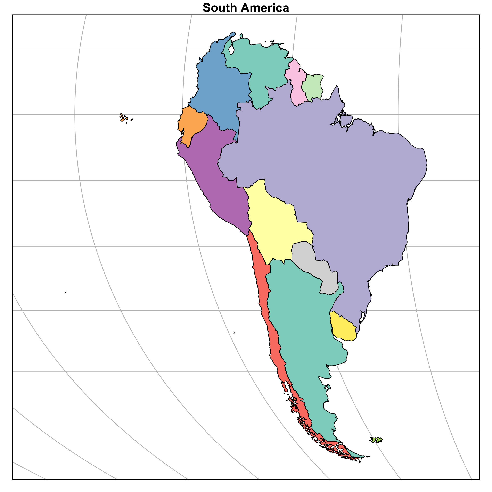
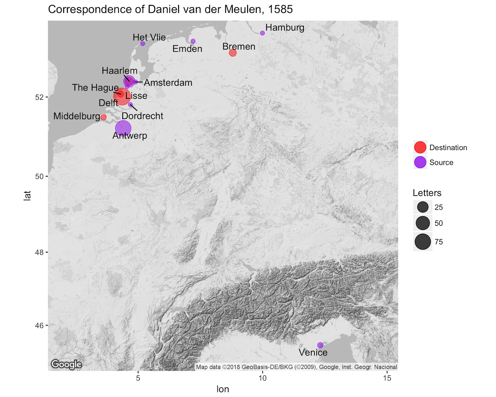
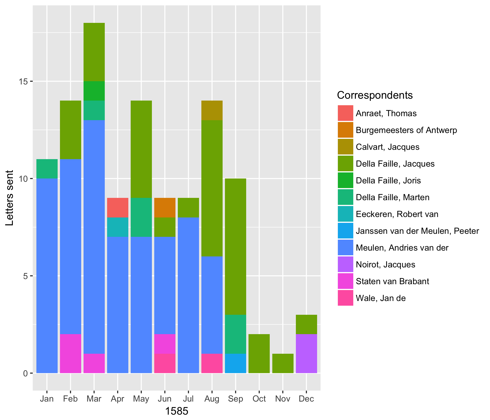

debkeepr is an R package for the analysis of historical non-decimal currencies and double-entry bookkeeping. Version 0.1.1 is debkeepr’s first release on CRAN.
A short breakdown of how to quickly download Twitter data using the rtweet package developed by rOpenSci.
Revitalizing the blog and moving from Hugo to Quarto
Introduction to debkeepr, a package for analyzing historical non-decimal currencies such as pounds, shillings, and pence.
A reflection on the first year writing this blog on Digital Humanities and R
Creating great circles in R with the sp and sf packages
Exploration of the implementation of simple features standard by the sf package for R

Introduction to GIS with R through the sp and sf packages
An introduction to network analysis with R for Digital Humanities using the network, igraph, tidygraph, and ggraph packages

Tutorial on geocoding and mapping historical data with ggmap

Why use R, and specifically the tidyverse, in the place of Excel for data analysis and visualization
My approach to learning the tools of Digital Humanities while in the midst of this process in 2017
Moving from organizing research to creating Digital Humanities Projects, or why I decided to learn R
Why I started to think about how I do research, or how I came to Digital Humanities
An introduction to the website on history and digital humanities